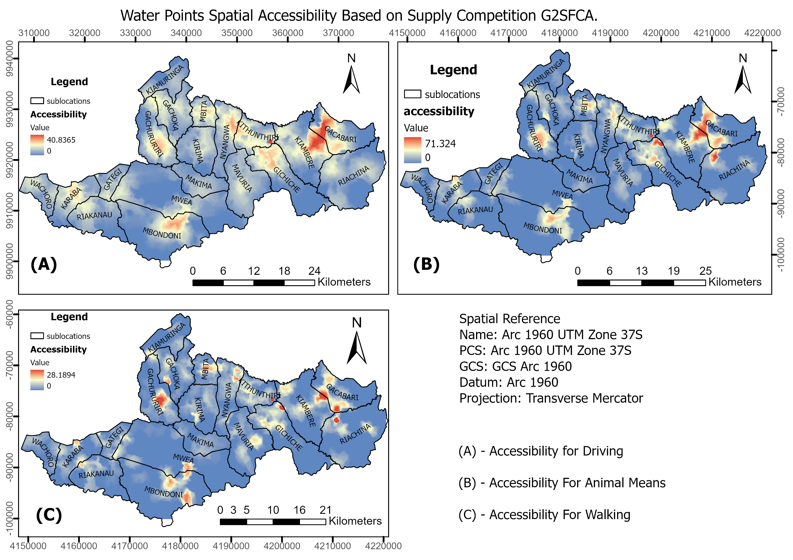
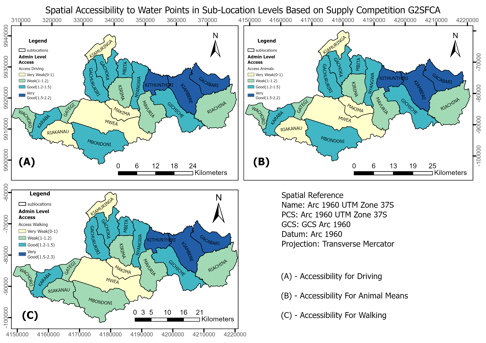

HydroGPT
A spatial web platform built to map and query water accessibility across Mbeere South Sub-County, Kenya. HydroGPT combines PostGIS network routing with a natural-language AI interface, allowing non-technical users to ask questions about water access in plain English and receive map-based answers.

Population density and water point distribution: Mbeere South Constituency. Arc 1960 UTM Zone 37S projection.
The Problem
Rural communities in Mbeere South face significant challenges in accessing clean water. Existing data on water points was scattered across county records with no spatial analysis layer. There was no tool allowing planners or community leaders to understand coverage gaps or plan infrastructure improvements without specialist GIS knowledge.
Approach
- Collected and cleaned water point location data for the sub-county
- Built a PostGIS database with road network topology using pgRouting
- Generated a continuous accessibility surface: travel time from any point to the nearest water source
- Built a FastAPI backend exposing spatial queries as REST endpoints
- Integrated an Ollama / LLaMA language model to parse natural-language questions into SQL spatial queries
- Delivered a Streamlit front-end dashboard for interactive map exploration

Continuous accessibility surface generated by pgRouting network analysis: coverage across 130,000+ population.
Results
- Coverage analysis across a population of 130,000+ residents
- Identified under-served wards with travel times exceeding 45 minutes to the nearest water point
- Dashboard deployed as a Streamlit app, usable without GIS expertise
- AI query interface successfully interpreted natural-language questions into spatial SQL with high accuracy on the test set

Interactive Streamlit dashboard

Spatial query results view
Tools & Stack
- PostGIS & pgRouting: spatial database and network analysis
- FastAPI: REST API backend
- Streamlit: front-end dashboard
- Ollama / LLaMA: natural-language query parsing
- Python (GeoPandas, Shapely, SQLAlchemy)
- ArcGIS Pro: cartographic outputs